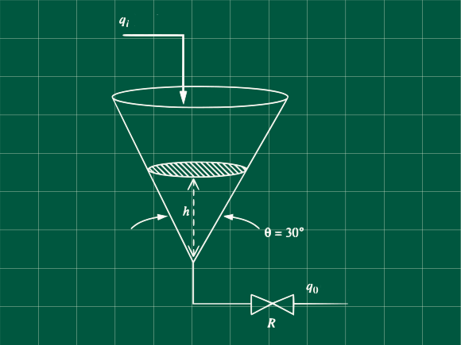

Problema 5.18 (Process Systems Analysis and Control - Coughanowr, LeBlanc)

Encuentre la función transferencia que relaciona la altura del embudo tanque y los cambios en el caudal de entrada.
Asumiendo densidad constante, realizamos nuestro balance de materia
qi−qo=dtdV ... (α)
Observamos que nuestro volumen es dependiente de la altura de manera no lineal.
Nuestro radio y volumen estan en función de la altura
r=h⋅tan(15°)
V=3πr2h
Poniendo el volumen en función de h, y haciendo k1=πtan2(15°)/3
V=3πtan2(15°)h3
V=k1h3
Linealizando usando la serie de Taylor truncada a primer orden, alrededor del estado estacionario
f(x)=f(xs)+dxdf∣∣∣∣∣x=xs(x−xs)
Siendo nuestra función a linealizar f(h)=V=k1h3, recuerde que f(hs)=Vs=k1hs3
V=k1hs3+3k1hs2(h−hs)
V=Vs+3k1hs2(h−hs)
V−Vs=3k1hs2(h−hs)
Diferenciando la ecuación convenientemente
d(V−Vs)=3k1hs2⋅d(h−hs) ... (β)
Trabajando en la ecuación α, Asumiendo linealidad de la válvula entonces reemplazando qo=h/R
qi−Rh=dtdV ... (γ)
Reescribiendo la ecuación en estado estacionario
qis−Rhs=0 ... (θ)
Restando θ de γ y sabiendo que dV=d(V−Vs) por ser Vs constante.
qi−qis−Rh−hs=dtd(V−Vs)
Reemplazando la ecuación β
qi−qis−Rh−hs=3k1hs2dtd(h−hs)
Cambiando a variables desviación
Qi−RH=3k1hs2dtd(H)
Aplicando la transformada de Laplace (H(t=0)=hs−hs=0)
Qi(s)−RH(s)=3k1hs2(sH(s)−H(t=0))
Qi(s)−RH(s)=3k1hs2sH(s)
Qi(s)H(s)=3k1hs2R⋅s+1R
Reemplazando adecuadamente y sabiendo que k1=π⋅tan2(15°)/3
Qi(s)H(s)=τs+1Kp
Con τ=π⋅tan2(15°)⋅hs2⋅R ; Kp=R
Referencias
- Coughanowr, D. R.; LeBlanc, S. E. (2009). Process Systems Analysis and Control (3rd edition). McGraw-Hill. ISBN 978-0-07-339789-4.